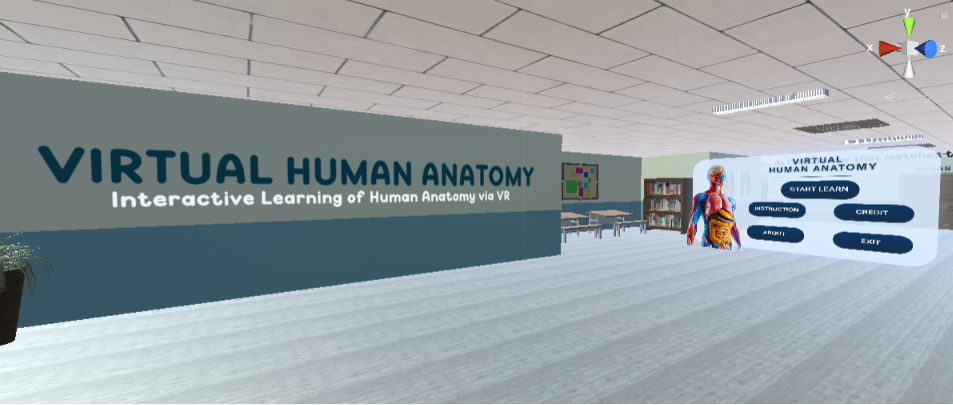
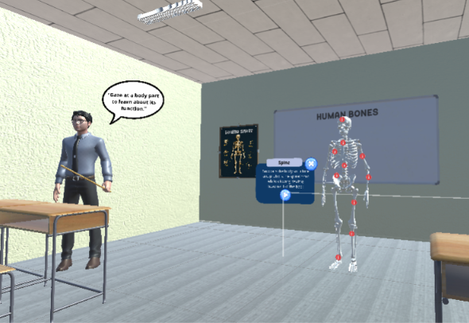
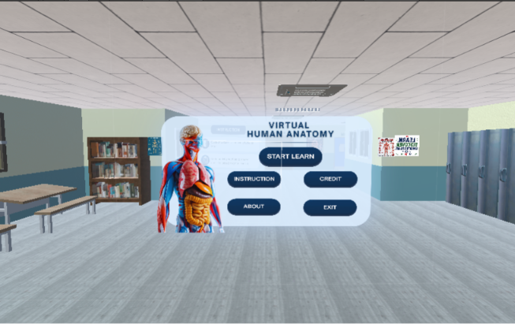
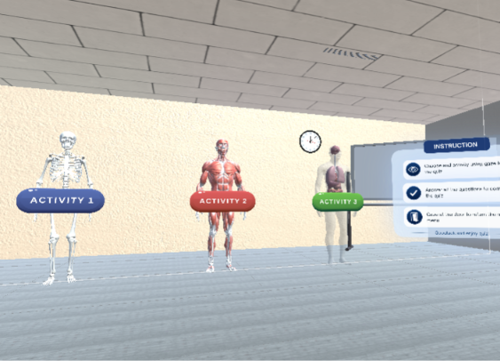
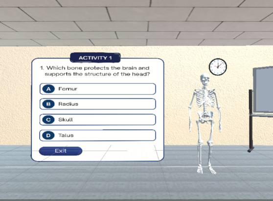

Virtual Human Anatomy
Virtual Human Anatomy
Virtual Human Anatomy
Virtual Human Anatomy
Virtual Human Anatomy is a Final Year Project developed to help students better understand human anatomy through immersive Virtual Reality technology.
The project provides interactive 3D anatomical models covering skeletal, muscular, and organ systems to support anatomy learning in a more engaging environment.
Interactive quizzes are integrated into the application to help users test their knowledge and improve their understanding of skeletal, muscular, and organ systems.


Interactive human anatomy models displayed in Virtual Reality.

Explore anatomy through realistic VR experiences.

Switch between skeletal, muscular and organ systems.

Improve understanding through interactive learning.